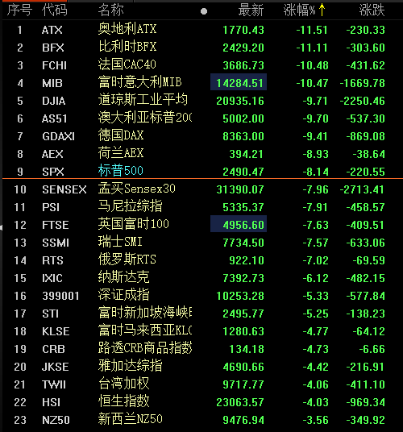
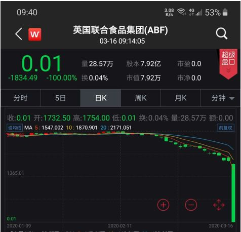

美联储紧急降息因何失灵？市场恐惧和病毒传播尚难遏制
原文链接 备份链接 一边货币政策已经很宽松，利率已经很低了，政策腾挪空间不大；另一边市场恐惧和病毒传播却未停止，防疫拉锯战才刚刚开始，金融稳定迹象还不明显 文 |《财经》特派记者 金焱 发自华盛顿 编辑 | 苏琦 在疫情和市场的巨大双重压 …

文/艾经纬
3月16日晚，全球金融市场又是一场血雨腥风，固然多国禁止做空，多国央行宣布降息，但金融市场正陷入恐慌。3月13日晚欧美股市还是热血沸腾，但一个周末过去刹那间巨熊再度袭来。
截至3月16日晚9点半，标普500指数开盘暴跌8.14%，道琼斯指数跌了9.71%，再度触发熔断，早先开盘的欧洲股市更是一片暴跌，南非股指跌幅超过12%创下历史最大跌幅。巴菲特89岁所活久见的，年轻人在这一周都见到了。

我们还是先从A股投资者3月16日上午一开盘应该会有点蒙来说起，怎么没来个报复性的反弹呢？内有央行5500亿元定向降准，外有上周五（3月13日）晚美股标普500指数大涨9.29%，这是为什么？
这个锅彻底地应该由美联储来背了。原来，美联储3月15日突然大规模降息，将联邦基金利率目标区间大幅下调至0～0.25%，同时宣布7000亿美元的量化宽松计划（QE），包括回购5000亿美元国债和增持2000亿美元规模的抵押担保证券。
这是美联储继3月3日紧急提前降息50个基点之后的再次紧急行动。值得注意的是，这又是一次提前行动，原本在3月18日要召开议息会议，但现在提前抛出了王炸。
从政策配合上来讲，美联储此时抛出王炸可以理解，因为上周五特朗普一改前日的口风，开始发布一系列应对疫情的政策。这也是上周五美股市场报复性反弹的一个原因。
但从市场的角度来看，美联储这次是搬起石头砸了自己的脚。原本在上周五市场报复性反弹之后，市场很有可能会自行恢复平静，降低波动。但美联储突然抛出王炸，尤其是降至零利率，再加上超常规的7000亿美元QE，这意味着未来的政策空间有限了，要开始裸奔了。
零利率和QE，都是2008年金融危机最危急的时候美联储的举措，而今在一个疫情面前抛出来了，能不让人对疫情的恐慌更加剧吗？
美联储抛出王炸的结果就是，标普500指数期货在3月16日清晨开盘不到半小时就迅速暴跌，继而下跌4.79%触及熔断。

在美股期货再次熔断的情况下，全资产价格受到波及，连黄金白银都在下跌，其中白银价格跌破13美元/盎司，为2009年以来的新低，甚至都比开采成本要低了。至于上周就崩的原油更是进一步崩，布伦特油价已经跌破32美元。
流动性紧张之下，各种恐慌爆发出来，英国联合食品集团（ABF）的股价在3月16日因为一个乌龙指突然由1559便士跌至0.01便士(1镑=100便士)，被迫暂停交易，也就是说一个几十亿英镑市值的公司骤然可以用不到8万英镑买下，多么骇人听闻。

至于A股市场，虽然3月16日上午10点国家统计局发布的1～2月份经济数据显示出疫情的冲击。如1～2月份规模以上工业增加值同比下降13.5%；社会消费品零售总额52130亿元，同比下降20.5%；全国固定资产投资（不含农户）33323亿元，同比下降24.5%。但这基本都在预期之内，甚至比预期的还要好。
加之3月13日多部委联合引发通知促进消费，同日央行又宣布定向降准5500亿元，其实是用心良苦，对冲3月16日上午发布的经济数据。但即便是这样，还是被美联储适得其反的王炸政策给带下了沟。
投资本是基于事实和数据这两个基本维度，但投资的游戏却是在情绪的第三维和梦想的第四维上展开的。对于当前的金融市场来说，已经陷入了恐慌阶段，市场的心理也很微妙。
从上周下半周起，自英国开始不断有央行跟进降息，全球主要央行都在联手注入流动性，但相对于疫情的恐慌来说，货币的宽松并不能解救生命。其实，现在对于全球金融市场来说，最能产生信心的是疫苗！
作者为资深市场人士，著有《杠杆黑洞》等
（编辑：赵芳迪 校对：颜京宁）


推荐阅读
点击大图 |美联储开闸大放水 “经济新冠肺炎”惊跑全球资本

点击大图 | 泉州楼祸****

原文链接 备份链接 一边货币政策已经很宽松，利率已经很低了，政策腾挪空间不大；另一边市场恐惧和病毒传播却未停止，防疫拉锯战才刚刚开始，金融稳定迹象还不明显 文 |《财经》特派记者 金焱 发自华盛顿 编辑 | 苏琦 在疫情和市场的巨大双重压 …
原文链接 备份链接 岛语 非常时期，武汉成了全国人民挂念、祈福的城市。封城后，武汉人民的真实生活是什么样？ 武汉在发生哪些变化？ 正和岛自1月26日起特别推出“叶青专栏”。叶青是一位定居武汉40年的市民，也是一名学者和官员。在过往多期的专 …
原文链接 备份链接 “外防输入”已是当前疫情防控重中之重。海外累计确诊病例超过10万，世卫组织呼吁各国扩大监测范围。欧洲更多国家关闭边境 文 |《财经》数据研究员 徐进 图 |《财经》视觉中心 编辑 |** 郝洲** 一、北京重启小汤山 …
原文链接 备份链接 “现在没有系统性的不平衡，我们更像是突然被流星撞击，只不过撞击我们的是病毒，不是流星” 文 |《财经》特派记者 金焱 发自华盛顿 编辑 | 苏琦 3月16日再成“黑色星期一”，全球股市又现连环熔断。3月16日美股触发 …
原文链接 备份链接 中国现有确诊病例已降至1万以下。国内已采取最严密的入境防疫检测措施。美国继续在快车道上狂奔，但基本防疫措施已经得到重视和加强 文丨《财经》数据研究员 徐进 图丨《财经》视觉中心 编辑丨郝洲 一、境外输入病例北京居首， …